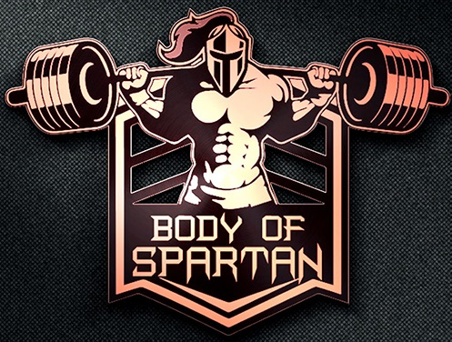

Hi there, we’re the spartan gym. We’re the lowest cost nationwide 24/7 Gym with 100 locations nationwide and counting! It’s our mission to break down barriers to fitness for everyone in the UK, providing top-quality gyms and expert advice at affordable prices. We want to make sure that absolutely everyone feels welcome. Whether this is your first time in a gym and you’re at the very start of your wellness journey or you’re looking to achieve a new personal best. Whatever your goal and whatever you want to achieve, we’re here to help you. We offer no pressure monthly memberships starting from only £13.99 which you can stop and start whenever you want to because we’re contract free. So instead of being tied into a yearlong agreement and opening hours that don’t suit your lifestyle, we give you your gym, your way open 24/7. No strings attached. All our gyms have loads of high spec kit, plus you get a timetable packed full of free exercise classes that you can use as frequently as you like. If you’d like something more tailored to your fitness goals, we also have a team of personal trainers in each of our gyms ready to work with you and create a bespoke plan. Step in today and workout. It’s that easy!